18:09 Kimberley V Kimberley V added 徐瑋鴻, Steve Chen, 黃永濱Yung Ping Huang to the group.
18:10 Kimberley V Hi
想請問目前在冷氣機維修理好之前，你們公司有什麼備案處理方式嗎？謝謝
18:15 Steve Chen The repair person just said that the intercom system is not something that they can fix today.
He doesn’t have an estimate on when it will be fixed.
18:15 Steve Chen We won’t be able to let anyone inside our unit.
18:16 Steve Chen 我還需要問多少遍你才能回答有關租金的問題。沒有空調和對講機，房子無法居住
18:19 Steve Chen Communicate with me here. You don’t need to go through Kimberley.
18:22 Steve Chen Can you share the contract (English) in this chat?
18:24 Steve Chen Link to Broken AC video.
18:24 Steve Chen We will review it with the legal team and get back to you regarding the AC unit and intercom system. The issue with the AC is not that it doesn’t work; the AC is a safety issue.
18:24 Steve Chen The issue with the intercom is also a safety issue. Without a working intercom, we are cut off from all communications with anyone outside the unit.
18:25 Kimberley V 帝寶租約(C1-28 Steve Chen 111.6.1-113.5.31)定.doc
18:25 Kimberley V 帝寶租約(C1-28 Steve Chen 111.6.1-113.5.31)定.doc-2.pdf
18:25 Steve Chen Article 8 is irrelevant. It is a safety issue.
18:31 黃永濱Yung Ping Huang 有關空調更新問題，廠商報價需2-3天。
18:33 Steve Chen We are afraid of turning on the air conditioning because we are scared of a potential explosion. We have a fire extinguisher next to the air conditioning unit. Nevertheless, due to safety concerns, we will be moving to a hotel until we can be told that using the air conditioner, in its current condition, is safe.
18:34 Steve Chen 這是一個安全問題。空調使用安全嗎？
18:36 黃永濱Yung Ping Huang 請問空調是否固定維護保養？
18:37 Steve Chen the same is the intercom system. if there’s an emergency, there’s no way for anyone to contact us.
18:38 Steve Chen 我們害怕打開空調，因為我們害怕潛在的爆炸。我們在空調旁邊有一個滅火器。儘管如此，出於安全考慮，我們將搬到酒店，直到我們被告知在目前的情況下使用空調是安全的。
18:42 黃永濱Yung Ping Huang
1.對講機有專業廠商，徐先生會針對電源供應問題量測。
2. 剛剛連繫帝寶客服中心，他們已在連繫對講機廠商
18:44 Steve Chen the apartment is uninhabitable due to safety concerns. Is the lessor accountable for the safety of the lessee? Does the lease contract mention this?
18:45 Steve Chen 出於安全考慮，該公寓無法居住。出租人是否對承租人的安全負責？租賃合約有沒有提到這一點？
18:47 Steve Chen 如果前台沒有辦法聯絡我們，我擔心我們的安全。
19:09 黃永濱Yung Ping Huang 積於合約精神，我方於點交給貴方時安全無顧慮，且負點交三個月之維護保養之責。 超出部分依照合約第八條及第九條約定，屬貴方應處理範圍。
19:12 Steve Chen Right now, if the air conditioner starts a fire, without a working intercom system, we have no way of calling the front desk. furthermore, we have no way of letting them know that we are in danger and other residents are also in danger.
19:13 Steve Chen 現在，如果空調起火，在沒有工作的對講系統的情況下，我們無法打電話給前台。此外，我們無法讓他們知道我們處於危險之中，其他居民也處於危險之中。
19:21 黃永濱Yung Ping Huang 對講機維修今天貴方通知，我方即派人協助處理。
但專業部份，客服中心已備案，並積極找合作廠商處理中。
對講機並非連絡前台的唯一方法，建議使用手機。
19:23 Steve Chen 如果發生火災，您能告訴我前台的電話號碼嗎？我不能問我的鄰居，因為沒有人用手機打電話給前台。
19:31 黃永濱Yung Ping Huang 帝寶服務中心：
（02）2721-7799
（02）2779-1188
11樓以上高層建築，應有消防偵測系統。
19:39 Steve Chen 謝謝你今晚對我的幫忙。我不會忘記。
20:42 黃永濱Yung Ping Huang 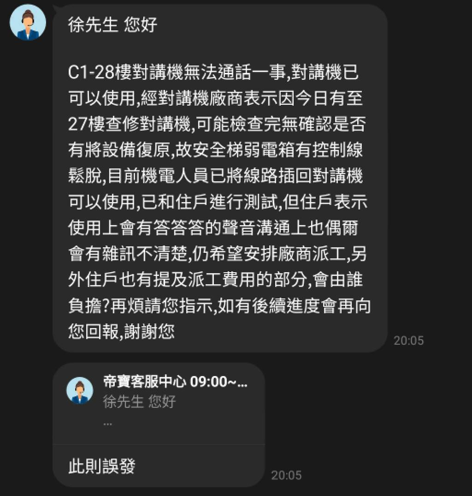
21:38 Steve Chen Link to Broken AC 2 video.
21:39 Steve Chen 這是一間房間打開空調後的噪音。我希望我們都有一個安全的夜晚。
21:41 Steve Chen 如果爆炸，我會打電話 —
1. (02) 2721-7799
2. (02）2779-1188
如果發生緊急火災，您能告訴我應該先用手機撥打哪個號碼嗎？
21:42 Steve Chen 你給了我兩個號碼，但我可能有時間只打一個。
21:42 Steve Chen 謝謝你今晚對我的幫忙。我不會忘記。
21:42 黃永濱Yung Ping Huang 2支都是客服中心，您可以試撥
21:43 Steve Chen 我不會忘記。
21:45 黃永濱Yung Ping Huang 最優先打119
21:47 Steve Chen 孩子們問他們是否可以打開房間裡的空調過夜。我假設你會說“好吧”，只要我給他們兩個緊急電話號碼？
21:50 Steve Chen 現在的孩子使用 iPhone 的次數太多了。像我這樣負責任的父親會阻止他們在床邊放 iPhone。但謝謝你教我119。
18:00 黃永濱Yung Ping Huang
黃先生 您好
C1-28戶對講機線路回復一事,已和廠商聯繫說明並安排明日(10/18)09:30至社區回復,屆時前台會協助進行對講測試,特此告知,謝謝您
18:06 Steve Chen 空調在打開和關閉時都會發出危險的噪音。
19:07 Steve Chen 晚上7點的籃球教練來了嗎？
19:09 Steve Chen 晚上7點的籃球教練來了嗎？
19:17 Steve Chen 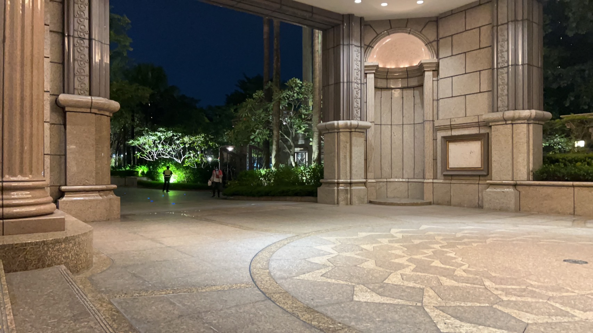
19:18 Steve Chen 我坐在前門，因為當老師出現時他們無法打電話給我
19:56 Steve Chen
19:57 Steve Chen 當燈閃爍時，這是出現問題的警告嗎？
19:58 Steve Chen 因為現在空調的噪音非常非常大。
20:27 Steve Chen 好吧，我今晚要開冷氣。 我真心希望它使用起來不會有危險。
21:16 Steve Chen 作為10/17/2023晚上正式提出的問題，C-28對我的家人過夜安全嗎？
21:46 Steve Chen 這是給你的還是給我的？我是陳士駿先生.
08:08 Steve Chen
08:10 黃永濱Yung Ping Huang 轉客服中心回報
08:11 Steve Chen 昨晚，我們睡覺時開著窗戶，關掉空調，因為我們害怕危險的聲音。 但外面的噪音太大了，所以我們凌晨1點就打開空調並關上窗戶。 這樣安全嗎？
08:12 Steve Chen 黃永濱. 我想確認這是你。
08:14 黃永濱Yung Ping Huang 我請我們機電人貧確認
08:14 黃永濱Yung Ping Huang 是的
08:26 Steve Chen 每天晚上，我都會擔心對講機和空調噪音等家庭安全問題。 黃永濱的回應是，如果發生火災，請撥打119。
08:28 Steve Chen 今天會比昨天更熱。 明天會比今天更熱。
08:55 黃永濱Yung Ping Huang
有關對講機及空調維護的問題：我回覆是合約第八條維護保養在交屋三個月是我方處理，之後是貴負責。
有關您提到火災時要打電話給客服中心，我只是善意提醒一般常識火災發生要打119。請您不要誤導我的回覆。
之前回覆您的秘書也明確告知雙方責任義務，有關空調維修問題依合約約定屬貴方應處理事項。我方僅佔在出租方立場提供協助，請勿將責任誤植我方。
我方也依照貴方所提冷氣年限問題做更新評估。目前在廠商報價程序。
09:07 Steve Chen 這是你對一位關心家人安全的父親的回應。
09:50 黃永濱Yung Ping Huang 1.站在出租方代表的立場，執行依據均必須依照合約約定，所以不得不陳述事實，讓您感覺不舒服，深感報歉。2. 空調廠商預計今天提出報價，我會請公司承辦人員以急件，走採發流程。
22:00 Steve Chen 我來自 Howard Hotel 的朋友給了我今晚住在那裡的房間
22:00 Steve Chen 房間裡至少有攝氏26-27度。 今晚，我可以去 Howard Hotel，或者打開所有窗戶並希望溫度降下來，或者和孩子們睡在同一張床上。
22:01 Steve Chen @黃永濱Yung Ping Huang 你有什麼建議？
22:02 Steve Chen 今晚我會去別的地方睡覺。 至少，黃永濱正在正確地完成他的工作。
22:03 Steve Chen 為什麼我們還沒有開始修理冷氣呢？ 為什麼週五還要檢查冷氣是否真的壞了？
22:04 Steve Chen Photos
22:04 Steve Chen Videos
22:27 Steve Chen 像你們這樣的人讓我的家人搬到台灣是一個痛苦的挑戰。但我並不指望你會改變。你很快樂。
07:10 Steve Chen 我睡了 5 個小時直到早上 6 點。
07:11 Steve Chen 打開窗戶和電子風扇。
09:22 黃永濱Yung Ping Huang 更新室外機，廠商需找大金原廠工程師現場檢測評估。
09:34 黃永濱Yung Ping Huang 連先生有向我的老闆關照您的問題，我也據實回報雙方合約約定，並請承辦單位儘快完成更新評估及作業。
09:55 Steve Chen 我嘗試晚上11點30分開室內空調睡覺。 3.5個小時後，我沒能睡著。 我關掉了室內空調，因為聲音太大了。 又過了30分鐘，太熱了，我又醒了，打開冷氣。 我去找耳塞戴。 我必須早上九點起床去和空調修理工開會。 又是一個睡眠不足5小時的晚上。
10:02 Steve Chen 目前，維修組正在對加熱器進行測試。 所以現在公寓內的溫度是攝氏32度。
11:20 Steve Chen 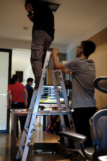 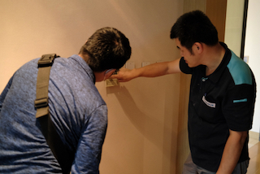 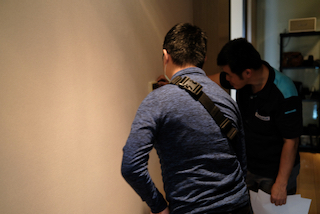 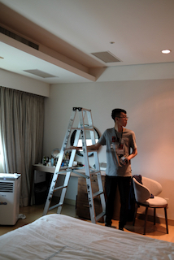 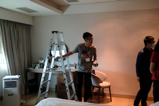 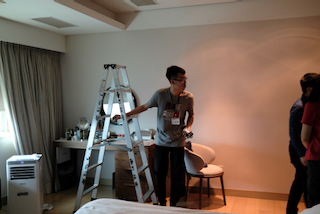 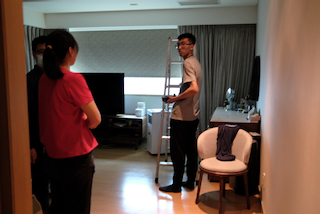 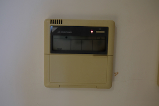 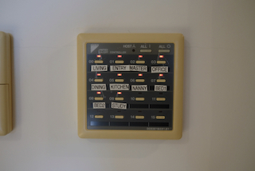 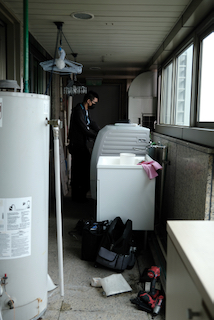 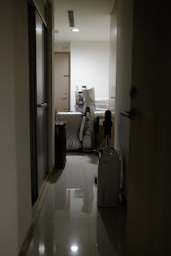 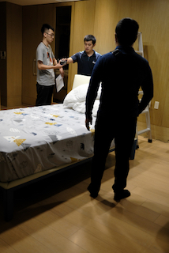 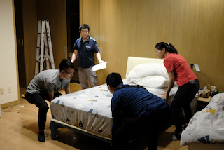 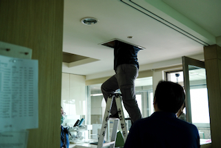 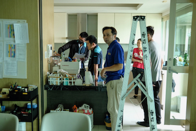
11:20 Steve Chen 這些是今天早上兩個多小時拍攝的。
11:34 Steve Chen 這又是睡眠中斷的一天。 又是一天花了3個多小時的時間試圖修復空調問題。